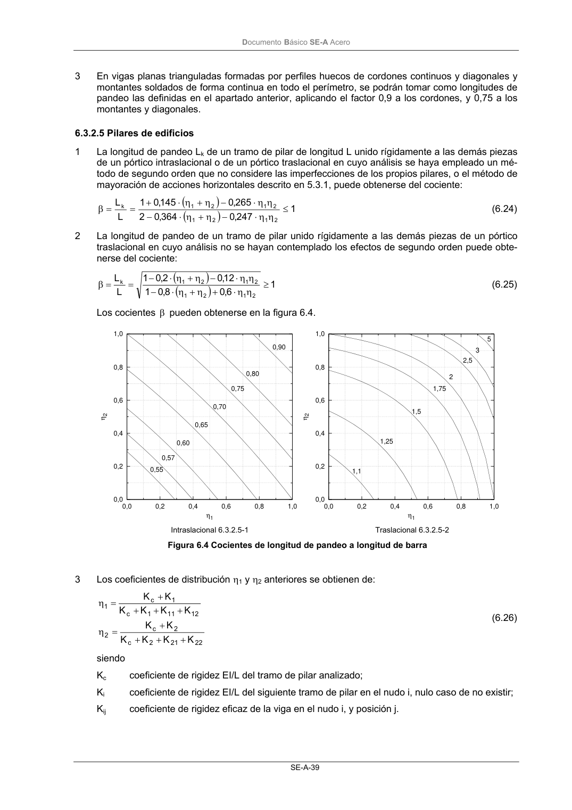

DB-SE-A Acero · edición 2007-10-23 · capa oficial
Documento DB-SE-A-oficial · SHA-256 del PDF 9ed9ea694aabfbda3bfbbef40dfe9223fde05d13c35bc2ba9751e5a96a22a64f
Copia fiel del PDF fuente · Fuente oficial
Ficha de la disposición en la fuente oficial
Formatos: JSON del segmento · Markdown
6.3.2.5 Pilares de edificios 1 La longitud de pandeo Lk de un tramo de pilar de longitud L unido rígidamente a las demás piezas de un pórtico intraslacional o de un pórtico traslacional en cuyo análisis se haya empleado un mé- todo de segundo orden que no considere las imperfecciones de los propios pilares, o el método de mayoración de acciones horizontales descrito en 5.3.1, puede obtenerse del cociente: ( ) ( ) 1 247 ,0 364 ,0 2 265 ,0 145 ,0 1 L L 2 1 2 1 2 1 2 1 k ≤ η η ⋅ − η + η ⋅ − η η ⋅ − η + η ⋅ + = = β (6.24) 2 La longitud de pandeo de un tramo de pilar unido rígidamente a las demás piezas de un pórtico traslacional en cuyo análisis no se hayan contemplado los efectos de segundo orden puede obte- nerse del cociente: ( ) ( ) 1 6,0 8,0 1 12 ,0 2,0 1 L L 2 1 2 1 2 1 2 1 k ≥ η η ⋅ + η + η ⋅ − η η ⋅ − η + η ⋅ − = = β (6.25) Los cocientes β pueden obtenerse en la figura 6.4. 0,0 0,2 0,4 0,6 0,8 1,0 0,0 0,2 0,4 0,6 0,8 1,0 η2 η1 0,55 0,57 0,60 0,65 0,70 0,75 0,80 0,90 0,0 0,2 0,4 0,6 0,8 1,0 0,0 0,2 0,4 0,6 0,8 1,0 η2 η1 1,1 1,25 1,5 1,75 2 2,5 3 5 Intraslacional 6.3.2.5-1 Traslacional 6.3.2.5-2 Figura 6.4 Cocientes de longitud de pandeo a longitud de barra 3 Los coeficientes de distribución η1 y η2 anteriores se obtienen de: 22 21 2 c 2 c 2 12 11 1 c 1 c 1 K K K K K K K K K K K K + + + + = η + + + + = η (6.26) siendo Kc coeficiente de rigidez EI/L del tramo de pilar analizado; Ki coeficiente de rigidez EI/L del siguiente tramo de pilar en el nudo i, nulo caso de no existir; Kij coeficiente de rigidez eficaz de la viga en el nudo i, y posición j. DocumentoBásico SE-A Acero SE-A-40 Si los tramos sucesivos tienen diferente relación cri N / N , la aproximación de β obtenida, y por tan- to la de la misma cri N , están del lado de la seguridad. Figura 6.5 Coeficientes de distribución 4 Los coeficientes de rigidez eficaz de las vigas pueden determinarse de acuerdo con la tabla 6.5, siempre que permanezcan elásticas bajo los momentos de cálculo. Tabla 6.5 Coeficiente de rigidez eficaz para una viga en comportamiento elástico Coeficiente de rigidez eficaz K de la viga Condiciones de coacción al giro en la vi- ga en el extremo contrario al considerado. sin compresión relevante con compresión(1) empotrado 1,0 EI/L 1,0 EI/L (1-0,4 N/Ncri) articulado 0,75 EI/L 0,75 EI/L (1 - 1,0 N/Ncri) giro igual y de igual signo 1,5 EI/L 1,5 EI/L (1-0,2 N/Ncri) giro igual y y de signo opuesto 0,5 EI/L 0,5 EI/L (1-1,0 N/Ncri) giro θa en el nudo considerado y giro θb en el otro (1 + 0,5 θb / θa) EI/L - (1) Ncri se refiere al valor crítico a compresión de la viga considerada. El caso general (-) no está contemplado Cuando por la situación de dimensionado considerada, el momento de cálculo en cualquiera de las vigas supera a Welfyd debe suponerse que la viga está articulada en el punto o puntos corres- pondientes.
